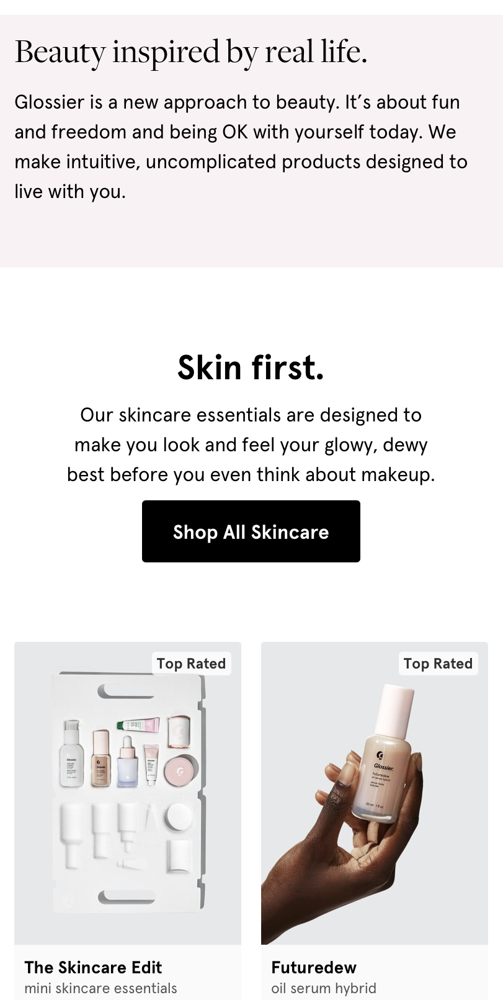

Visual Hiearchy
Alo Yoga
Alo Yoga is a great example of visual Hierachy by making sure the users eye is drawn to what is important. It allows those visint the site to see things in order of importance which helps make the user experience more enjoyable.
Rule Of Thirds
Glossier
This site uses the rule of thirds specifically when you begin to look at items to shop for. The designers of this page centered the titles for the page and and then broke up each product into thirds.
PARC Alignment
Rhode
The following site is a great example of PARC alignment, as you scroll through the site everything is very equally aligned and nothing looks out of place. It makes the site feel very clean, simple and easy to navigate.